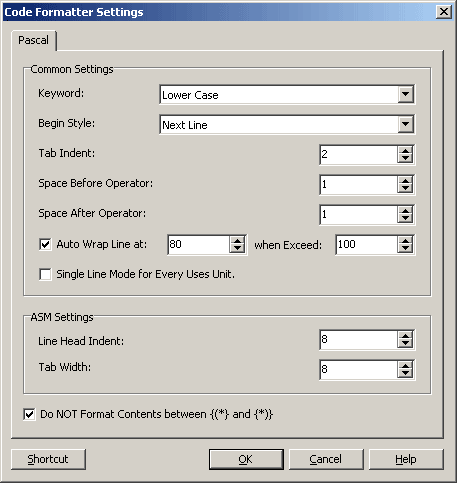
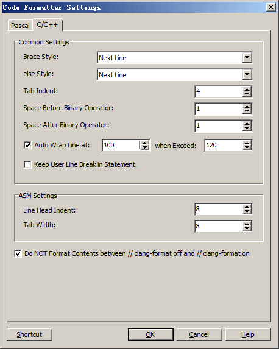

| Code Formatter Wizard |
Code Formatter Wizard
This Wizard is used to format code in the IDE. It supports Pascal and C/C++.
With the default shortcut Ctrl+W, you can format the current Pascal unit or C/C++ source file, or a selection in the editor. If a selection is formatted, it is extended to whole lines before formatting.
Settings
The Setting Dialog of This Wizard is as below:

Common Settings
Keyword: Specify how to Process Keywords. Default is Lower Case.
Begin Style: Specify where to Put "begin" when Meeting Structureed Statements like if...then or with...do. Defaultly Put to Next Line. Note: This Option does NOT Affect Procedure or Function Body.(Always use Next Line.)
Else After End Style: When processing code involving if and similar constructs that include else, this setting determines whether the else keyword is placed on the same line after end, or on a new line. By default, else is placed on a new line. Note that this option has no effect when there is no end, and else will always be placed on a new line in such cases.
Tab Indent: Space Count for Tab Indent. Default is 2.
Space Before Binary Operator: Space Count before a Binary Operator. Default is 1.
Space After Binary Operator: Space Count after a Binary Operator. Default is 1.
Auto Wrap: There are 2 Line Width in Auto Wrap Setting: the Smaller One "Break Line Width" and the Bigger One "Exceeding Width". When a Line Exceeds the "Exceeding Width", it will be Broken to Next Line at "Breake Line Width". This Feature can avoid some Minor Contents at Next Line when the Original Line is a Little Longer than "Exceeding Width".
Single Line Mode for Every Uses Unit: If Checked, Every Unit Name in Uses Area will Occupy One Line, Otherwise Use a Simple auto Wrap Mode with the above Break Line Width. Note: The uses Area in Project Source will Always Occupy One Line Each for there may be 'in' and File Path after Unit Name.
Keep User Line Break in Statement: If Checked, Line Breaks in a Statement will be kept. Auto Wrap Options will be ignored.
Use IDE Internal Symbols to Correct Identifiers: If Checked, Code Formatter will Compile Current Unit and Use IDE Internal Symbols to Correct the Identifiers in Source. This Feature Depends on Input Helper.
Compiler Directive: For some Compiler Directives such as {$IFDEF} {$ELSE} {$ENDIF}, Our Wizard can't Process them Perfectly, and Treat them as Comments Defaultly. But usually Causes Syntax Error for "Duplicated Elements". This Option allow to Only Format the First Branch of Conditional Defines({$IFDEF} {$ELSE} of {$IFDEF} {$ELSE} {$ENDIF}), and Keep Others Unchanged.
ASM Settings
Line Head Indent: Space Count at Line Head (Except Label) in Inline ASM Code. Default is 8.
Tab Width: Tab Width in Inline ASM Code. Default is 8.
Do NOT Format Content between {(*} and {*)}: If Checked, Contents between {(*} and {*)} won't be Formatted and will Keep its Original Format.
C/C++ Formatting Settings

Brace Style: Specifies whether an opening brace is placed on the current line or on the next line.
Else Style: Specifies whether else stays on the same line as the preceding closing brace or moves to the next line. Combined with Brace Style, this can produce either } else { or separate lines for the closing brace, else, and opening brace.
Tab Indent: Specifies the number of spaces used for C/C++ indentation. The default is 4.
Space Before Binary Operator: Specifies the number of spaces before binary operators. The default is 1.
Space After Binary Operator: Specifies the number of spaces after binary operators. The default is 1.
Auto Wrap: The formatter supports three modes: no automatic wrapping, simple wrapping, and advanced wrapping. When enabled, code is wrapped after exceeding the configured line width. The larger "Exceeding Width" is used by advanced wrapping, while the smaller line width is used to find a suitable break point.
Keep User Line Break in Statement: Preserves line breaks originally present inside a statement and skips automatic wrapping.
ASM Settings: Specifies the line-head indentation and the tab width between an inline ASM keyword and its operands.
Do NOT Format Contents between // clang-format off and // clang-format on: When checked, C/C++ contents between these markers are copied in their original format.
Shortcut: Change Shortcut for Menu Items Here.
OK: Confirm modification.
Cancel: Cancel this modification.
Help: Show this help.
Limitation and Known Problems
About Compiler Directive: We Treat Compiler Directives as Comments. So if You have Code such as {$IFDEF XXX} var A: Byte; {$ELSE} Word;{$ENDIF}, Code Formatter will Raise Error. Please Notice it.
About Comment: We Keep the Original Format when Processing Comments, basically NO Change compared to Formatting Results. So maybe seems NOT so Good.
Settings Limited: Now This Wizard only Provides A Few Settings. We'll Provide More Later.
C/C++ Code: Common C/C++ syntax and RAD Studio/C++Builder extensions are supported. Lines beginning with # are kept as original preprocessor lines.
Links